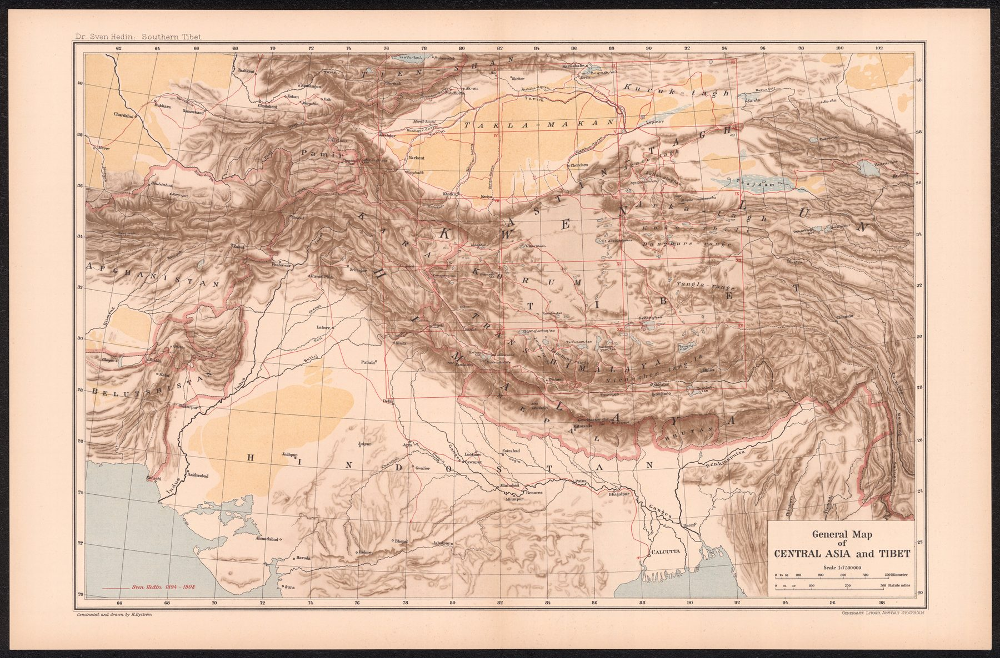

The published synthesis
The map was produced for Hedin’s Southern Tibet project with cartographic work by Otto Kjellström, H. Byström and the lithographic institute of the Swedish General Staff. It condenses a much larger corpus of route surveys, observations, sketches and specialist maps into one regional overview.
Exploration and compilation
Hedin’s expeditions supplied substantial new measurements, but the general map is an institutional publication combining field observation, drafting, calculation, lithography and existing geographic knowledge.
A strategic highland
Central Asia and Tibet mattered to European science and to the strategic imagination surrounding India’s northern approaches. The sheet sits at the intersection of exploration, physical geography and the geopolitics of frontiers. It hangs at the edge of a collection about India because the highland it draws is the one the Government of India spent a century looking over, and because by 1922 the European gaze had run out of subcontinent to survey and was mapping what lay beyond it.
The gaze
Hedin’s name stands above those of the draughtsmen who drew the sheet, and the hierarchy of the title is the hierarchy of credit for the region. Tibet enters European geography as territory traversed by one man and calculated by others, and in 1922 that division of labour still looked natural.